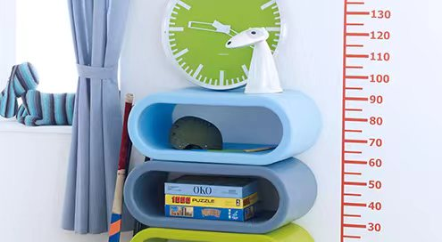
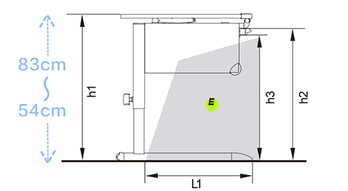
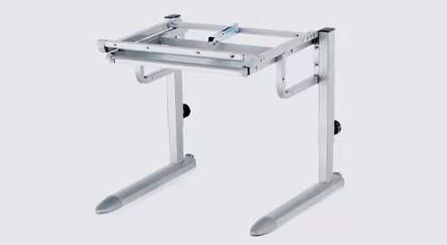

-

PERSONALIZED SETTINGS
NISTAC desks have multiple adjustment settings that allow the furniture to "grow"withthe child. The many adjustment options are easy to set, allowing for the changingheight and size of the child's well as individual preferences. From reception to the endof schooling and beyond, our product lines allow focused and relaxed desk work.These furniture items are formidable companions for many years to come, and a greatinvestment in terms of their long-term value.
-

ERGONOMIC DESIGN
A healthy back for life starts with a good posture in youth. That is why ergonomics areat the heart of all our desk and chair designs. Our furniture offers individual adjustmentoptions to allow for the natural urge for movement and the comfort needed for concen.tration while studying.
-

QUALITY & SAFETY
Quality and safety. These attributes are never more important than in products forchildren and teenagers. Reliability and excellent usability is quaranteed for manyyears.